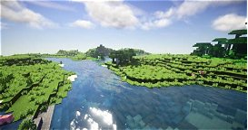
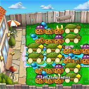
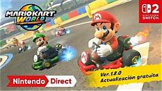

Bienvenido a mi página
Los videojuegos se agrupan en géneros, igual que las películas o los libros. Un género depende de cómo se juega: qué hace el jugador, qué habilidades usa y cuál es su objetivo. En esta página vas a conocer los géneros más populares y ejemplos de juegos famosos.
Elige un género
 Acción y Shooters |
 Aventura y Plataformas |
Rol (RPG) |
 Estrategia |
 Deportes, Simulación y Puzzle |
Conoce más |